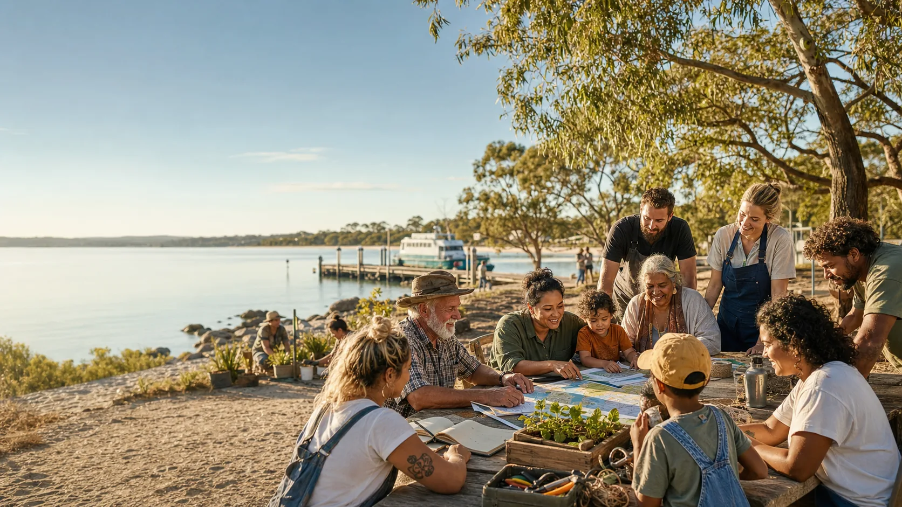

Community wealth funds
How a community can protect shared capital, spend the income wisely, and build seven-generation strength.
Open wealth funds
Moreton Bay archipelago research doorway
What if a community could protect today, grow tomorrow, and keep its data close to home without handing its future to distant systems?
The simple idea
Rain comes in from community businesses, royalties, rent, grants, donations, co-owned projects, or careful investment. Some water is used now. Some stays protected for dry seasons. Some is saved for children not born yet.
This site explores how that idea could connect with mutual protection, Indigenous data sovereignty, Native Title agreements, local media, and practical community infrastructure around Moreton Bay.
The pattern
The same basic choice appears at every scale: keep the life-giving things close enough for people to understand, protect and shape them. Clean energy, local intelligence - local knowledge joined with useful data - mutual insurance, shared wealth, food, health and quality of life are not separate dreams. They are parts of one pattern.
At the smallest scale, it looks like a person with consent, useful tools and dignity. At home, it looks like safer data, steadier bills, better food and repairs that happen early. In community, it can become trusted local news, prevention-first insurance, clean energy projects, co-owned assets and a fund that thinks beyond the next crisis.
Rooms in the house
How a community can protect shared capital, spend the income wisely, and build seven-generation strength.
Open wealth fundsHow neighbours can share risk carefully, where normal insurance still matters, and why legal words need respect.
Open mutual careHow personal, household, community, and Indigenous data can be treated like keys, stories, and Country, not loose scraps.
Open data sovereigntyThe tone
This site is a table, not a pulpit. It helps people compare choices: small and practical, legal and careful, cultural and long-range. The work is to design and build lawfully without following the status quo blindly. No flashy spin. Just simple wins people can understand, inspect, and improve.
Local family bridges
Ready S.E.T. trust doorway for the existing 9 Ballow Road building and the nearby 9A/9B vacant-title conversation.
Community news, training clips, local updates and noticeboards that help people see what is happening.
Separate greenfield proposal for Sandy Sports, screen nights, markets and visitor welcome near QUAMPI and the ferry gateway.
Visit Sand & Screen HubSame-town open-data lab for the Junner Street ferry terminal upgrade, public evidence, simulations and community questions.
9 Ballow Road, with the 9A/9B vacant-title conversation, sits in the trust hub lane. The Sandy Sports and Sand & Screen proposal sits in the separate 10-12 Ballow Road greenfield lane. The ferry terminal upgrade is public infrastructure at Junner Street.